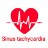

تاکی کاردی سینوسی
در سایر بیماران که با تاکی کاردی مراجعه میکنند اگر وضعیت Unstable باشد لازم است شوک داده شود واگر Stable است، به دنبال رفع عامل زمینهای و کنترل با دارو پیش بریم.
تعریف
ضربان قلب بالاتر از ۱۰۰ در بالغین
ضربان قلب نرمال در کودکان
▪️نوزادان = ۱۱۰ تا ۱۵۰ در دقیقه
▪️۲ سالگی = ۸۵ تا ۱۲۵ در دقیقه
▪️۴ سالگی = ۷۵ تا ۱۱۵ در دقیقه
▪️۶ سال به بالا = ۶۰ تا ۱۰۰ در دقیقه
علل سینوس تاکی کاردی
Non-pharmacological
🔹Exercise
🔹Pain
🔹Anxiety
🔹Hypovolaemia
🔹Hypoxia, hypercarbia
🔹Acidaemia
🔹Sepsis, pyrexia
🔹Anaemia
🔹Pulmonary embolism
🔹Cardiac tamponade
🔹Hyperthyroidism
🔹Alcohol withdrawal
Pharmacological
🔸Beta-agonists: adrenaline, isoprenaline, salbutamol, dobutamine
🔸Sympathomimetics: amphetamines, cocaine, methylphenidate
🔸Antimuscarinics: antihistamines, TCAs, carbamazepine, atropine
🔸Others: caffeine, theophylline, marijuana
Narrow complex tachycardias
Regular
Sinus tachycardia 1️⃣
Atrial tachycardia 2️⃣
Atrial flutter 3️⃣
Supraventricular tachycardia 4️⃣
AVNRT 5️⃣
Orthodromic AVRT 6️⃣
7️⃣ Narrow complex VT (fascicular tachycardia)
Irregular
Tachycardia with PACs, PJCs, PVCs 1️⃣
Atrial fibrillation 2️⃣
Atrial flutter with variable block 3️⃣
Atrial tachycardia with variable block 4️⃣
Multifocal atrial tachycardia 5️⃣
Paroxysmal atrial tachycardia 6️⃣
Digoxin toxicity 7️⃣